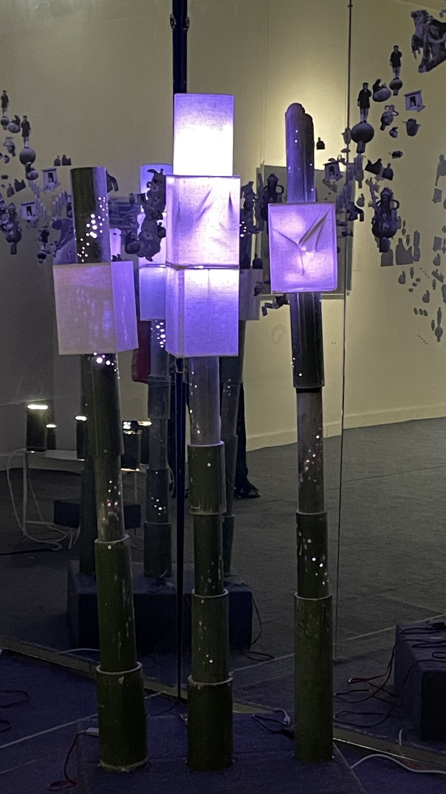
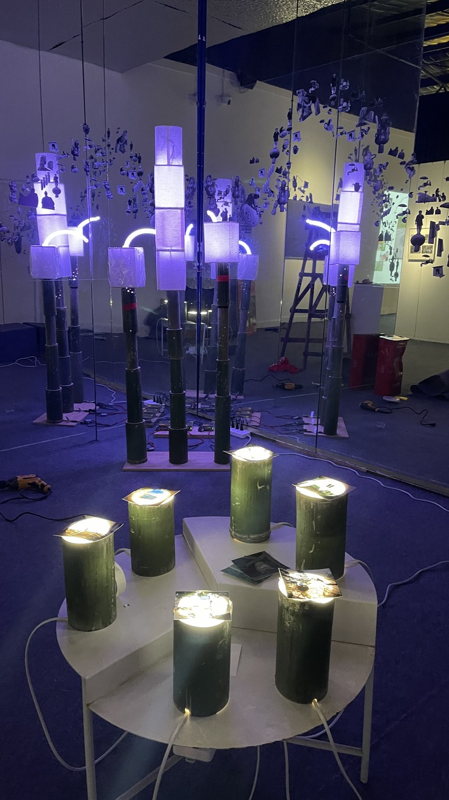
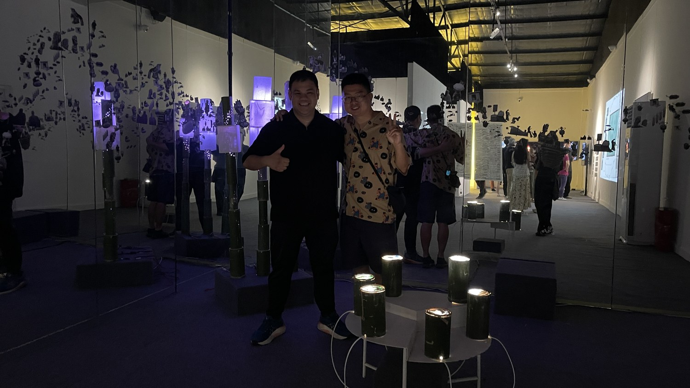

This project takes the bamboo pipe — the technology once used to carry the two resources that gave Sichuan its life: brine (卤水, lǔshuǐ) and natural gas (天然气, tiānránqì) — and rebuilds it as a sculpture of light and photography. The work is rooted in Huojing (火井, Huǒjǐng, “fire well”) in Qionglai (邛崃, Qiónglái), the place where the use of natural gas was first recorded in the world.
For centuries this resource moved through nothing more advanced than hollowed bamboo — drilled and jointed by local craftsmen. We return to that humble object and let it carry, instead of gas, light and image. Bamboo poles are drilled so that light leaks out from within like fireflies (萤火虫, yínghuǒchóng).
The photographs are portraits of the families of Huojing — the people who live around the bamboo and the wells. The artists think of them as “descendants of bamboo”: ordinary households whose lives are woven into this material. The piece brings together bamboo, light, and these portraits so that a Sichuan story is told through a Sichuan material — carried inside the very pipe the history is about.
Zhao Geli (CN) × Wave Pongruengkiat (TH)


